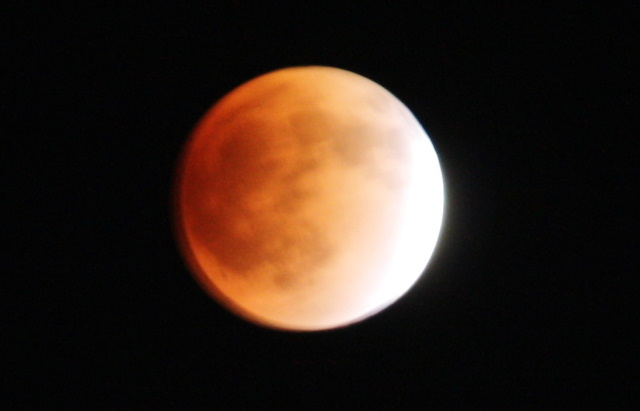

Flash ! DX
|
Who said 6M was a dead band ?
|
(íç)
DZÇÃReportÇÇ≤óóÇ…Ç»ÇÈï˚Ç÷
[Back Issues Dec.2011]
TIME:UTC(JST-09:00)
Report from JA1RJU(PM95sq)
31.Dec.2011(15:00c)
ZL-TV 02:35- 45.24/25/260 -- weak
VK-TV 06:20- 46.240 --
9M6XRO 07:16 50.110 CW RST 599
Report from JA1RJU(PM95sq)
30.Dec.2011(15:00d)
VK-TV 06:00- 46.240 --
VK2HN 06:58 50.110 CW
VK3DUT 06:59 50.110/135 SSB CQ
VK4AEP 07:05 50.110/130 SSB @
VK4WQ 07:08 50.110 SSB
Report from JA1RJU(PM95sq)
29.Dec.2011(15:00b)
Report from JA1RJU(PM95sq)
28.Dec.2011(15:00b)
Report from JA1RJU(PM95sq)
27.Dec.2011(15:00c)
ZL-TV 04:00- 45.240/250 --
VK-TV 04:30- 46.240 --
VK5PO 05:10 50.110 CW
VK3ZAZ 05:13 50.110 SSB
ZL3ADT 05:18 50.110 SSB
ZL3MH 05:20 50.130 SSB
VK5PO 05:26 50.098 RTTY
VK3ZAZ 05:30 50.107 CW
ZL3NW 05:32 50.110 SSB
VK7AC 05:39 50.140 SSB @
VK7XX 05:51 50.140 SSB @
VK7AC 05:52 50.140 SSB @
Report from JA1RJU(PM95sq)
26.Dec.2011(15:00c)
ZL-TV 03:00- 45.260 --
E51EME 03:22 50.110 CW CQ weak
VK-TV 05:30- 46.240 --
Report from JA1RJU(PM95sq)
25.Dec.2011(15:00c)
ZL-TV 04:40- 45.240/250 --
VK4WTN 06:21 50.110 SSB CQ
VK-TV 06:30- 46.240 --
VK4MA 06:38 50.110 CW CQ
Report from JA1RJU(PM95sq)
24.Dec.2011(15:00d)
ZL-TV 02:38- 45.250/260 --
E51EME 02:44 50.110 CW CQ
E51EME 02:47 50.110 CW QSL to ZL1RS (Direct only)
E51EME 02:59 50.110 CW CQ
ZL1NX 03:34 50.110 CW CQ
VK4WTN 04:08 50.110/140 SSB
VK4TUX 04:08 50.110/135 SSB CQ
VK4ACE 04:09 50.110/150 SSB CQ
VK4RY 04:10 50.110 SSB
VK4CRO 04:17 50.110 SSB
3D2AG/P 04:19 50.110 CW @ 3D2/R (Rotuma)
VK4WTN 04:24 50.100 CW
3D2AG/P 04:28 50.105 CW QSL to Home QTH (Direct only)
VK4TUX 04:32 50.110 SSB CQ
VK4BLK 04:40 50.110 SSB CQ
VK4TUX 04:44 50.115 SSB @ Adrian
VK4BLK 04:46 50.120 SSB @ Ray
ZL1NX 04:57 50.110 CW CQ
3D2AG/P 04:58 50.109/105 CW
ZL3NW 04:59 50.105 CW CQ
ZL4PW 05:42 50.108 CW CQ
ZL2AO 06:19 50.120 SSB
ZL3NW 06:19 50.101 CW RST599
ZL3MH 06:24 50.110 SSB
Report from JA1RJU(PM95sq)
23.Dec.2011(15:00c)
ZL-TV 02:20- 45.250/260 --
VK4WTN 05:08 50.110 CW
Report from JA1RJU(PM95sq)
22.Dec.2011(15:00c)
ZL-TV 01:40- 45.250 -- S-9
ZL-TV 02:20- 45.24/25/260 --
VK-TV 03:30- 46.240 --
VK8MS 05:15 50.110 CW
Report from JA1RJU(PM95sq)
21.Dec.2011(15:00b)
ZL-TV 02:00- 45.24/25/260 --
BA4SI 04:50 50.110 CW CQ CQ
Report from JA1RJU(PM95sq)
20.Dec.2011(15:00d)
ZL-TV 05:10- 45.24/25/260 --
VK4CRO 05:22 50.110 SSB CQ
ZL3NW 05:30 50.102 CW
VK4AMG 05:32 50.110 CW CQ
ZL3NW 05:38 50.102 CW @ RST599+
VK7AB 05:56 50.110 SSB CQ
Report from JA1RJU(PM95sq)
19.Dec.2011(15:00c)
ZL-TV 02:30- 45.24/25/260 --
VK-TV 03:20- 46.240 --
Report from JA1RJU(PM95sq)
18.Dec.2011(15:00c)
ZL-TV 03:30- 45.24/25/260 --
VK5PO 04:41 50.110 CW
Report from JA1RJU(PM95sq)
17.Dec.2011(15:00d)
ZL-TV 04:00- 45.24/25/260 --
VK5BC 04:59 50.110 SSB
VK5AYD 06:22 50.110/140 SSB RS59+
ZL4LV 06:30 50.110 SSB
ZL3NW 06:33 50.102 CW
ZL3ADT 06:34 50.110/115 SSB
ZL3MH 06:48 50.140 SSB
VK5AYD 06:50 50.095 RTTY RST599 (FT857D 40W+7EL)
VK5AYD 07:24 50.110 SSB QSO with HL
Report from JA1RJU(PM95sq)
16.Dec.2011(15:00e)
DU7/PA0HIP 04:51 50.110 CW CQ
VK5BC 05:10 50.110 SSB
VK5ZK 05:12 50.110/130 SSB
DU1EV/B 05:15- 50.008 CW Beacon
VK2OT 05:28 50.110/130 SSB
VK2YOC 05:29 50.110/140 SSB
VK4CRO 05:29 50.110/130 SSB
VK4ACE 05:30 50.110/160 SSB
VK4WTN 05:32 50.100 CW
VK2ZT 05:33 50.110 SSB
VK4HJ 05:43 50.125 SSB
VK4BRG 05:47 50.145 SSB
VK4ACE 05:53 50.150 SSB
VK4CRO 05:58 50.160 SSB
VK5BC 06:06 50.125 SSB
VK4AQF 06:06 50.110 SSB
VK5GF 06:08 50.115 SSB
VK5RO 06:10 50.115 SSB
VK4AHW 06:13 50.130 SSB
DU7/PA0HIP 06:15 50.104 CW
VK4RGG/b 06:15- 50.058 CW Beacon
VK4HJ 06:19 50.140 SSB
VK2IF 06:23 50.110 SSB
VK2BUO 06:25 50.110 SSB CQ
VK4LT 06:25 50.110 SSB
VK4LT 06:30 50.110 SSB @ Al
VK2ABT 06:35 50.110 SSB
VK4ACE 06:37 50.110/150 SSB
VK2OT 06:38 50.110/170 SSB
VK2IR 06:49 50.120 SSB @
DU7/PA0HIP 07:15 50.104 CW RST599++
DU1EV/B 07:45- 50.008 CW Beacon
Report from JA1RJU(PM95sq)
15.Dec.2011(15:00b)
ZL-TV 01:50- 45.24/25/260 --
VK-TV 01:50- 46.240 --
Report from JA1RJU(PM95sq)
14.Dec.2011(15:00c)
ZL-TV 03:20- 45.24/25/260 --
VK-TV 03:20- 46.240 --
VK4WTN 05:09 50.110/155 SSB CQ
VK4WM 05:47 50.110 CW CQ
Report from JA1RJU(PM95sq)
13.Dec.2011(15:00d)
VK-TV 03:00- 46.240 -- S9+
VK3ZAZ 04:15 50.110 CW @ CQ
VK3HY 04:17 50.110 CW @
VK3ZAZ 04:19 50.106 CW CQ
VK3HY 04:25 50.103 CW CQ
VK5PO 06:15 50.099 RTTY
VK5BC 07:30 50.110 SSB
VK5AYD 07:45 50.099 RTTY
Report from JA1RJU(PM95sq)
12.Dec.2011(15:00b)
ZL-TV 00:40- 45.24/25/260 --
VK-TV 02:00- 46.240 --
Report from JA1RJU(PM95sq)
11.Dec.2011(15:00e)
ZL-TV 00:00- 45.24/25/260 --
ZL-TV 02:00- 45.24/25/260 --
VK-TV 04:30- 46.240 --
VK6IQ 06:23 50.110/120 SSB
VK6XLR 06:24 50.110 SSB CQ
VK6YS 06:26 50.110 SSB
VK6OX 06:38 50.110 SSB CQ
VK6RPH/b 06:40- 50.066 CW Beacon
VK6XLR 06:50 50.110 SSB @ RS59
VK6NS 06:57 50.110/120 SSB
VK6NS 07:06 50.120 SSB @
VK6VZ 07:12 50.106 CW CQ CQ
DU7/PA0HIP 08:23 50.110 CW CQ
Report from JA1RJU(PM95sq)
10.Dec.2011(15:00c)
VK-TV 04:30- 46.240 --
VK2YL 04:32 50.110 SSB
VK4RGG/b 04:35- 50.058 CW Beacon
VK4QM 04:38 50.110 SSB
VK6KXW 08:38 50.110 SSB CQ RS59



11îNÇ‘ÇËÇ…äœë™Ç≥ÇÍÇΩäFä˘åéêH(12/10=21:45JSTÅ`12/11=01:18JST)
éBâeéûä‘ÇÕç∂Ç©ÇÁ21:39Å®22:05Å®22:18Å®22:34Å®23:14Å®23:45
Report from JA1RJU(PM95sq)
09.Dec.2011(15:00d)
ZL-TV 01:50- 45.24/25/260 -- strong!
VK-TV 04:00- 46.240 --
VK2BHO 05:00 50.110 CW CQ
ZL1LDS 05:03 50.120/115 SSB
ZL2WHO 05:06 50.130 SSB CQ JA
ZL1LDS 05:23 50.115 SSB
ZL2WHO 05:55 50.110/115 SSB still RS59
Report from JA1RJU(PM95sq)
08.Dec.2011(15:00c)
ZL-TV 01:30- 45.24/25/260 -- strong!
Report from JA1RJU(PM95sq)
07.Dec.2011(15:00e)
BY-TV 05:00- 49.750 -- S9+
9M4SIX/b 05:50- 50.005 CW Beacon RST589
DU1EV/B 05:50- 50.008 CW Beacon RST599+
9M4SIX/b 07:15- 50.005 CW Beacon still good!
VK6OX 08:15 50.110/155 SSB RS59
VK6RO 08:17 50.110/135 SSB RS59
VK6GL 08:22 50.135/140 SSB
VK6RO 08:27 50.110/105 CW CQ
VK6VZ 08:35 50.107 CW CQ
VK6KDX 08:38 50.125 SSB
VK6IQ 08:39 50.130 SSB
VK6AB 08:41 50.120 SSB
VK6ZFG 08:47 50.140 SSB @ OP IGOR
VK6VZ 09:23 50.108 CW CQ CQ
Report from JA1RJU(PM95sq)
06.Dec.2011(15:00c)
ZL-TV 02:10- 45.24/25/260 --
VK4ZJB 05:15 50.110 SSB
VK4WTN 05:19 50.103 CW
VK-TV 06:00- 46.240 --
Report from JA1RJU(PM95sq)
05.Dec.2011(15:00d)
ZL-TV 04:00- 45.250/260 --
VK5PO 04:47 50.110 CW
VK5ZK 04:55 50.110 CW
VK5ZK 04:56 50.110 CW @
VK5JR 04:59 50.110 SSB @
VK5AAM 05:04 50.150 SSB
VK5BC 05:07 50.110/150 SSB
VK5RO 05:10 50.150 SSB
VK5ZK 05:10 50.150 SSB
VK5ZK 05:22 50.110 SSB CQ
VK5BC 05:37 50.110 SSB
VK2HN 05:38 50.110 CW
VK5GF 05:56 50.110 SSB
VK5PO 06:11 50.110 CW CQ
Report from JA1RJU(PM95sq)
04.Dec.2011(15:00c)
ZL-TV 02:00- 45.24/25/260 --
VK-TV 05:00- 46.172/240 --
ZL2WHO 05:32 50.130/110 SSB
ZL2WHO/B 05:40- 50.025 CW Beacon
ZL2WHO/B 06:15- 50.025 CW Beacon
Report from JA1RJU(PM95sq)
03.Dec.2011(15:00b)
ZL-TV 03:00- 45.260 --
Report from JA1RJU(PM95sq)
02.Dec.2011(15:00c)
ZL-TV 02:20- 45.24/25/260 --
-----------------------------------------------------
JR6YAG/B 0224Z 50037.0 539 IN GG88DS PY4AQA
JR6YAG/B 0228Z 50037.0 555 + QSB IN GG66vl PU2OKE
-----------------------------------------------------
VK-TV 04:00- 46.172/240 --
ZL2WHO 06:24 50.110 SSB
ZL3NW 06:30 50.110 SSB
JI1FGX/DU9 08:02 50.110 SSB CQ RS59+
Report from JA1RJU(PM95sq)
01.Dec.2011(15:00c)
ZL-TV 00:30- 45.240/250 --
VK-TV 02:40- 46.172/240 --
XV2RZ 06:33 50.105 CW CQ
KG6DX 06:52 50.105 CW CQ